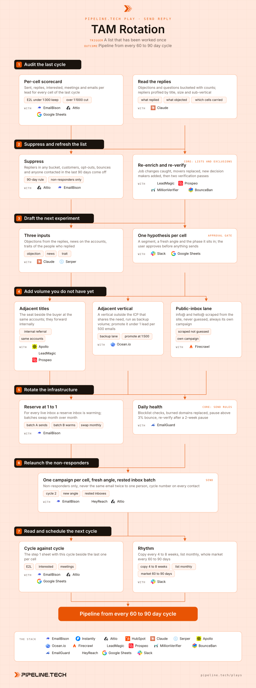

Play 09 · Send, reply and conversion
TAM Rotation
Give this to your agent
Install the Pipeline.tech "TAM Rotation" outbound play. Fetch https://raw.githubusercontent.com/pipeline-tech/plays/main/core/SKILL.md and https://raw.githubusercontent.com/pipeline-tech/plays/main/plays/tam-rotation/SKILL.md, save them as ~/.claude/skills/pipeline-outbound-core/SKILL.md and ~/.claude/skills/pipeline-tam-rotation/SKILL.md, then run /pipeline-tam-rotation.
Paste into Claude Code. It installs the shared core rules plus this play, then runs it as /pipeline-tam-rotation.

Workflow, generated from the skillOpen full size
You cannot spawn more market, so once the TAM is mapped and sent, the only question is what you do with the list the second time. Most teams treat a worked list as spent and go hunting for a fresh one that does not exist. Treat it as an asset instead: suppress, refresh, change the angle, rotate the inboxes, and the same market pays out again every 60 to 90 days.
Load pipeline-outbound-core first. Where a step says "apply core", follow that section of the core skill.
Inputs
Ask for these before step 1, and save them to ./pipeline-plays.config.json:
- The worked list from
pipeline-full-tam-cold-emailor any list sent once, with cell name, send date and reply bucket per contact. - The reply export per campaign, classified into the core buckets.
- The current offer per segment and the phase each cell reached.
- Inbox inventory: live and reserve batches with warmup scores.
- Stack answers from core section 1.
Steps
1Audit the last cycle
ToolsEmailBisonAttioClaudeGoogle Sheets
- Per cell, log sent, bounce, reply rate, interested, meetings and emails per interested lead (E2L). Rank the cells; one or two usually carried the run and the aggregate hides it.
- Read every reply, not only the interested ones. Group objections and questions into a counted list; each line feeds step 3.
- Profile the repliers: title, company size, sub-vertical, receiving provider. Note what they share that non-responders do not.
- One sheet, one row per cell, so cycles compare line by line.
2Suppress and refresh the list
ToolsAttioHubSpot (option)EmailBisonLeadMagicProspeoMillionVerifierBounceBan
- Apply core: lists. Apply core: exclusions. Then remove every replier in any bucket, customers and open deals, opt-outs, hard bounces and anyone contacted in the last 90 days. The pool is non-responders only.
- Re-enrich what remains, monthly: confirm each contact is still in seat, replace movers with the current role holder, add decision makers who joined since the last pull. Apply core: enrichment.
- Apply core: verification on the whole pool, including rows that were valid last cycle. Addresses die between cycles.
- Keep suppressed rows with a reason column. "Not now" replies return on their recall date, not on the cycle.
3Draft the next experiment
ToolsClaudeSerperGoogle SheetsSlack
- Write each experiment as hypothesis, segment, copy: "price objectors respond to a cost-per-outcome angle; construction x owner; three variants plus a threaded nudge."
- Three inputs feed it: the objection list from step 1 (answer the most common one in the opener), account news via Serper dated inside 90 days, and the traits of the repliers (write for the seat and size that answered).
- Phase rule: phase 1 settles the offer, phase 2 holds the offer and tests wording, phase 3 scales. Cells do not skip a phase between cycles.
- Success is 2% positive reply or 20% of replies positive. A variant that lifts replies but lowers meetings loses.
- Apply core: copy and send rules. Post the plain-text experiments to the user. Nothing is spintaxed or uploaded until each one has a yes.
4Add volume you do not have yet
ToolsApolloOcean.ioFirecrawlLeadMagicProspeoHeyReach (option)
- Adjacent titles. At every account in the pool, add the role one seat over or one level down. Their "forwarding this to the right person" is the internal referral the first cycle never got.
- Adjacent vertical. Pick one vertical explicitly outside the ICP that shares the problem. A proxy and web-data client found agencies, not its target market, converting on a lane nobody expected to work. Run it as one high-volume backup campaign. If it lands under 1 lead per 500 emails, investigate why and promote it to a full segment next cycle.
- Public-inbox lane. Scrape info@, hello@ and contact@ from each company's website, never guess them. It runs as its own campaign because results conflict across offers: one source saw 2 to 4% reply and 10 to 15% positive, mostly low-urgency "sure, why not" replies; another offer saw role emails fail to convert at all. Keep or cut it per offer on its own numbers.
- Tier 2 contacts in the adjacent-title lane also get a LinkedIn connection request two days after email 1. Apply core: tiering.
5Rotate the infrastructure
ToolsEmailBisonInstantly (option)EmailGuard
- Apply core: send rules. Pause any campaign above 3% bounce.
- Hold a reserve at a 1 to 1 ratio. Month 1 batch A sends while batch B warms; month 2 they swap. A cycle never launches from the batch that just finished.
- Check blocklists daily. A listed domain is replaced, not nursed: the redirect moves to a fresh secondary domain and its inboxes rebuild from warmup.
- Any campaign paused two weeks or more is re-verified before it resumes.
6Relaunch the non-responders
ToolsEmailBisonInstantly (option)HeyReach (option)AttioClaude
- Spintax the approved experiments and run the
pipeline-full-tam-cold-emailstep 5 QA gate. Zero blockers or no launch. - One campaign per cell as before, cell name plus a cycle suffix, from the rested batch. Step 4 lanes get their own campaigns and inboxes so they read alone.
- Never the same email twice to the same person. If the new angle shares opener, proof or ask with the cycle 1 angle for that cell, rewrite before upload.
- Apply core: CRM and alerts, with cycle number, cell and angle on every contact.
7Read and schedule the next cycle
ToolsEmailBisonAttioSlackGoogle Sheets
- Weekly diagnostic chain: bounce indicts verification, low replies the list, low interested the offer, no meetings the handover.
- Compare each cell against its last-cycle line. Improved cells move to the next phase; cells that failed twice are retired until the offer changes.
- Judge the added lanes alone: promote the adjacent vertical under 1:500, keep the public-inbox lane only if it clears the success threshold.
- Rhythm: copy rotates every 4 to 8 weeks, the list re-enriches monthly, the whole market turns over every 60 to 90 days. Book the next audit before this cycle finishes.
- Apply core: credits and handoff.
Guardrails
- Never send the same email twice to the same person, across cycles or lanes.
- Non-responders only. A reply in any bucket removes the contact from rotation; recalls return on their own date.
- No experiment sends without the user's approval on the plain text.
- The public-inbox lane never shares a campaign with decision-maker contacts.
- Never launch from the batch that just finished, or from any inbox under its 14-day warmup.
Example run
User: "/pipeline-tam-rotation on the bookkeeping TAM, cycle 1 finished ten weeks ago"
- Audit: 23 campaigns, 21,400 sent, 1.6% reply, 48 interested, 19 meetings, E2L 1:446. Two cells carried 31 of 48. Objections: 14 "we have a bookkeeper", 9 "not the right person", 6 on price.
- 7,480 contacts, 1,180 suppressed. Re-enrichment replaced 612 movers and added 290 decision makers. 6,710 verified valid, 380 catch-all kept.
- Three experiments approved: clinics answer "we have a bookkeeper" with a month-end-close angle (phase 2), construction holds the offer and tests proof wording, agencies try a cash-flow angle (phase 1).
- Added 2,140 adjacent titles, 1,900 adjacent-vertical contacts (dental labs) and 3,300 scraped public inboxes.
- Batch B (36 inboxes, warmup 92 or higher) took the sends, batch A back to warmup. Two blocklisted domains replaced.
- 31 campaigns tagged cycle 2 launched Monday.
- Week 4: 14,200 sent, 0.8% bounce, 1.9% reply, 34 interested, E2L 1:418. Clinics improved to 1:260. Adjacent vertical 1:470, promoted. Public inboxes 2.6% reply, 9 interested, kept. Next audit booked eleven weeks out.
Run this play with usPipeline.tech runs TAM Rotation end to end for clients: infrastructure, lists, copy, sends and replies.
Book a callView on GitHub